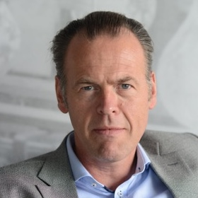

Ruhr University Bochum, Chalmers • Univ. of Gothenburg

Professor of Computer Science at Ruhr University Bochum and Affil. Prof. at Chalmers • University of Gothenburg, working across software and AI engineering.
Ruhr University Bochum
Professor at Ruhr University Bochum and head of the Software Quality group, with work on automated testing, repair, and software quality.
Chalmers • University of Gothenburg
Associate Professor in software engineering at Chalmers and the University of Gothenburg, with expertise in empirical software engineering and cloud systems.
Chalmers • University of Gothenburg
Associate Professor in software engineering with work spanning requirements engineering, conceptual modeling, and AI engineering.
Chalmers • University of Gothenburg

Professor of Software Engineering focused on AI engineering, software architecture, software metrics, and long-running collaboration with industry.
Chalmers • University of Gothenburg

Professor and head of division in Interaction Design and Software Engineering, researching requirements management, traceability, and high-level architecture within large-scale software and AI development.
Chalmers • University of Gothenburg

Assistant Professor in Software Engineering, specializing in secure ML-enabled systems, threat modeling, and verification of design and implementation.
Chalmers • Software Center

Professor of Software Engineering at Chalmers and founder of Software Center, with long-standing ties between industry and academia in software engineering and product development.